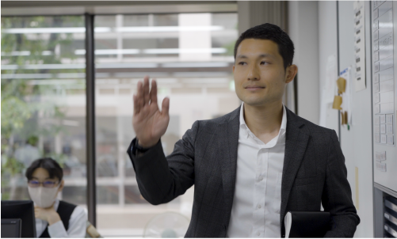

知識・スキル0からのスタート。
新規開拓や
海外取引にも果敢に挑戦。
営業部（東京営業室）
Okada Itsumi
岡田 逸臣／2010年入社
Q.入社の動機は？

「就職難の時代に結ばれた縁」
新卒で入社した会社を会社都合で退職し、そこから半年ぐらいしてから転職活動を行いました。社会人経験が短く、特別なスキルもない状況だったので、とにかくまずはキャリアを積みたいと思っていました。ですが、当時はリーマン・ショック直後の就職難の時代。自分の望む条件を重視して選べるような状況ではなかったのですが、当社に決まった時には転職活動が成功して良かったなと思いました。
新卒で入社した会社を会社都合で退職し、そこから半年ぐらいしてから転職活動を行いました。社会人経験が短く、特別なスキルもない状況だったので、とにかくまずはキャリアを積みたいと思っていました。ですが、当時はリーマン・ショック直後の就職難の時代。自分の望む条件を重視して選べるような状況ではなかったのですが、当社に決まった時には転職活動が成功して良かったなと思いました。
Q.現在の業務内容は？
「既存ルート営業から新規開拓まで」
メイン製品の販売先である老舗問屋さんを中心に営業活動をしています。加えて、最近は文具メーカーや海外のクライアントもいます。海外のお客様とは商社を介して販売対応をしています。既存の取引先が多く、日々ルート営業のような感じで対応していますが、時には新規の流通・問屋さんに拡販していきます。新規の取引については、一から自分で道を切り開いたという思い入れもあるので、受注できた時にはより大きな達成感を感じます。
メイン製品の販売先である老舗問屋さんを中心に営業活動をしています。加えて、最近は文具メーカーや海外のクライアントもいます。海外のお客様とは商社を介して販売対応をしています。既存の取引先が多く、日々ルート営業のような感じで対応していますが、時には新規の流通・問屋さんに拡販していきます。新規の取引については、一から自分で道を切り開いたという思い入れもあるので、受注できた時にはより大きな達成感を感じます。
Q.印象に残っている仕事は？
「未知の領域に挑んだインドのライセンス取得」
2017年にインドの標準規格BIS法が改正され、輸出に関してライセンス取得が必要になりました。ちょうど私が担当していたお客様との取引で、このライセンスが必要ということになったのですが、会社としてもこうした案件の経験がなく、商社の方にご協力いただきながら進めて行きました。初海外出張でインドに行ったり、海外のコンサルタントや認証機関の方たちを招いて監査を行ったりと、会社も私自身も手探りで、関係者の人数も非常に多く、苦労した濃密な期間でしたが、記憶に残っている仕事です。結局、無事ライセンスが取得出来、現在も運用できています。
2017年にインドの標準規格BIS法が改正され、輸出に関してライセンス取得が必要になりました。ちょうど私が担当していたお客様との取引で、このライセンスが必要ということになったのですが、会社としてもこうした案件の経験がなく、商社の方にご協力いただきながら進めて行きました。初海外出張でインドに行ったり、海外のコンサルタントや認証機関の方たちを招いて監査を行ったりと、会社も私自身も手探りで、関係者の人数も非常に多く、苦労した濃密な期間でしたが、記憶に残っている仕事です。結局、無事ライセンスが取得出来、現在も運用できています。
Q.仕事に関する知識習得で苦労した点は？
「取引先に学ばせてもらった新人時代」
私の入社した十数年前は、仕事に関する知識は先輩から教わるというよりは、社内より社外で学ぶという感じでした。自分から積極的に客先に出向いて行き、知識不足で恥をかくこともありましたが、お客さんと会話しながら身に着けて行くというような感じで、例えば、問屋さんと一緒にトラックに乗って、材料加工メーカーさんの所に行き、どんな部品になるのかを見学させてもらったりしながら、知識と経験を積んでいきました。
現在は、入社後に工場の各部署を周って研修を受けたり、社内の教育体制も整っていますので、まずは社内で必要な基礎知識を得ることができると思います。
私の入社した十数年前は、仕事に関する知識は先輩から教わるというよりは、社内より社外で学ぶという感じでした。自分から積極的に客先に出向いて行き、知識不足で恥をかくこともありましたが、お客さんと会話しながら身に着けて行くというような感じで、例えば、問屋さんと一緒にトラックに乗って、材料加工メーカーさんの所に行き、どんな部品になるのかを見学させてもらったりしながら、知識と経験を積んでいきました。
現在は、入社後に工場の各部署を周って研修を受けたり、社内の教育体制も整っていますので、まずは社内で必要な基礎知識を得ることができると思います。